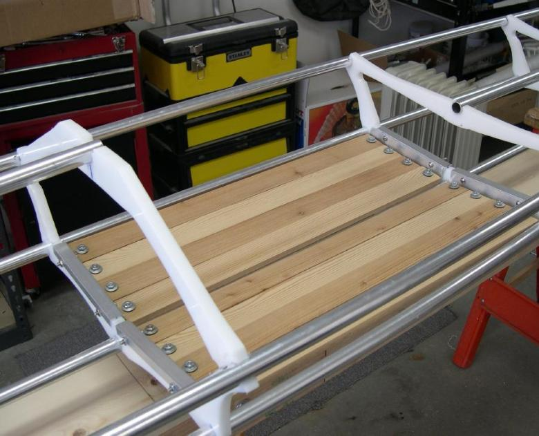

| Wood Slat Floor (1 of 7) | Menu Previous Page Next Page |
|
 Cedar Slat Floor - The Sea Ranger floor is made of 3/8" cedar, though exterior grade plywood is an alternative. The slats are attached to aluminum brackets. The brackets are attached to the HDPE cross sections. The floor is easily removed for folding. |
|